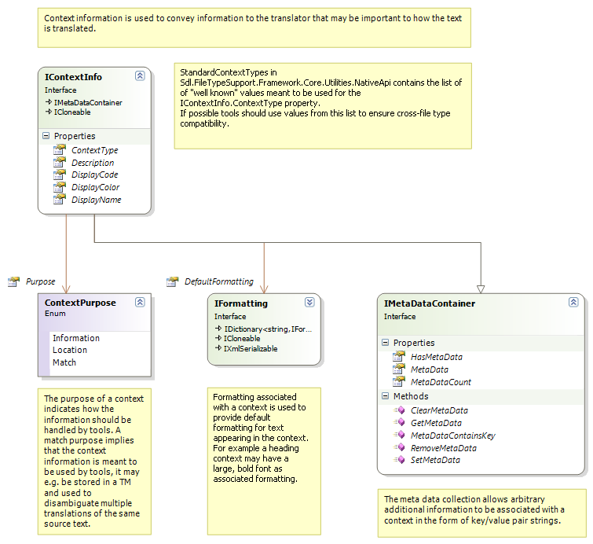
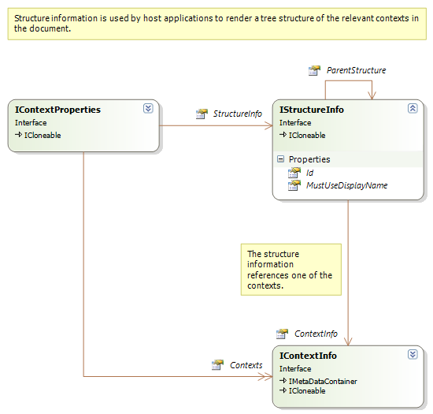

Overview of the Native API
This section contains a quick overview of the Native API.
The Native API contains the functionality needed to build filters and filter components for processing monolingual content in a native doucment format (e.g. Microsoft Word). Most file filters and file processing components can be built using only this API of the Var:ProductName. The only exceptions where the native API is not sufficient are those in which you need to explicitly process content available in bilingual form, e.g. if working with bilingual file formats such as TTX or ITD.
The core of the native API is the IAbstractNativeContentHandler interface. All the content processing (output, input or both) happens through this interface. (This interface is somewhat similar to the IEvents interface of File Type Support Framework 1.) The following diagram provides and overview of the native content handler interface and components that are directly related to it:

From the above diagram you can see that parsers use this interface to generate their output, while writers use the interface as input (???) (the writer implements the interface and receives calls on it from other filter components). The native content processor uses the content handler interface both as input and output. It receives calls on its implementation of the interface, and as a result of these calls, sends calls to another content handler.
Localizable content that is processed in the framework is divided into text and tags. All localizable text processed by the framework is passed through the Text method in this interface. Tags are passed as calls to either of the following methods:
- StructureTag: tags that represent structural information in the file. This is the equivalent of the external tags in File Type Support Framework 1.
- InlinePlaceholderTag: standalone tags that may appear inside localizable text and that may need to be placed and/or duplicated during translation, This is the equivalent of standalone inline tags in File Type Support Framework 1.
- InlineStartTag and InlineEndTag: paired tags, which can appear inside localizable text and which usually need to be placed and/or duplicated (as a pair) during translation. The framework requires these calls to be nested according to standard XML rules, i.e.:
- Each call to
InlineStartTag()must be matched by a call to InlineEndTag() at a later point during content processing. Note that text content will usually occur within a start and end tag, which may include other, similarly nested tag pairs. - A call to
InlineEndTag()must never occur before a (corresponding) call to InlineStartTag(). - A call to
InlineEndTag()will always be interpreted by the framework as matching the last “unmatched” call toInlineStartTag(), i.e. the last of the previous calls toInlineStartTag()for which no other call toInlineEndTag()has been matched.
- Each call to
If the nesting rules are not followed to the letter, the framework will throw an exception. Note that these new rules did not apply in File Type Support Framework 1. However, start and end tags in File Type Support Framework 1 were always effectively nested this way by filters anyway.
Each of the methods in the content handler interface take property objects, which describe the actual data passed through the call. The tag properties have the following relations and content:

All the properties objects implement the ICloneable interface. They are cloned when inserted in bilingual content models and when inserted in a buffer. This ensures that the properties do not get implicitly changed.
Information on the structure of the file and other relevant context information that may be relevant for the translation can also be communicated through the framework. For this purpose, the method ChangeContext is used.
The context properties passed in the ChangeContext() method contains both the document structure information and the context information relevant for localization purposes:

The localization context information is a prioritized list of individual contexts. The context that is most significant for the translation should be first in the list. Each context is structured as follows:

If a context is intended to be used by localization tools to e.g. to impact recycling or disambiguate multiple matches in a translation memory its Purpose property should be set to Match . If the context is meant only as additional information to the translator its context purpose should be Information. The Location purpose is used by the framework in the bilingual content model to reference the location of the tag for paragraph units that hold any localizable tag content.
The StandardContextTypes is a list of well-known context types. These should be used by filters whenever appropriate in order to ensure the best possible tool support and cross-file type compatibility. If no context in the well-known list is appropriate, a custom context can be specified.
Additional information on a context can be stored in the IMetaDataContainer key/value pair collection. The purpose of this information is to enable filters and filter components to use contexts for communication of document meta-data. This information is also serialized together with the context in the default bilingual file format.
A context may also have semi-WYSIWYG formatting associated with it. If several contexts are associated with formatting information, the combined formatting should be used as base formatting for all paragraph units the contexts apply to. The combined formatting can be retrieved from the EffectiveDefaultFormatting property.
Other properties of the context are used to specify how the context may be displayed to the user. Filter components should only set these for contexts that are not part of the StandardContextTypes.
The document structure context can be used to generate an overview of the document content. It contains the following information:

All property objects passed through the methods in the IAbstractNativeContentHandler are created through a property factory that is provided by the framework. The IPropertiesFactory interface looks like this:

Filter components may implement INativeFileTypeComponent , as shown in the following diagram:

The framework uses this interface to provide facilities such as the properties factory and the message reporter to the filter components. When creating your own components you may choose to (but are not required to) derive them from the AbstractNativeFileTypeComponent) or one of its derived classes: AbstractNativeFileWriter, AbstractNativeFileParser, AbstractNativeGenerationContentProcessor, AbstractNativeExtractionGenerationContentProcessor, which all 1implement this interface for you. You can then access the properties factory and the message reporter directly through their property names withouth any additional implementation work.
Components may also implement the INativeContentCycleAware interface, which the framework uses to communicate to the components when parsing starts and ends, and allows components to store and retrieve settings that will be persisted as part of the bilingual format:

Native filter components can be grouped together to perform reading and writing operations through the Extractor and Generator converters:

The forward converter manages a file parser and an associated set of content processors that work together to perform conversion from the native format. The backward converter in a similar way manages a collection of content processors and a writer that can be operated as one unit.
Content processors typically apply specialized tasks to the content stream. Examples include detecting localizable content inside tags, marking up embedded HTML content in strings, conversion of XML/SGML/HTML entities, etc. When developing content processors it is sometimes necessary to examine content later in the stream in order to determine how to process preceding content. This means that the component must buffer streaming content until it has enough information to process it. The framework contains a buffer component that can be used for this purpose:

Note
This content may be out-of-date. To check the latest information on this topic, inspect the libraries using the Visual Studio Object Browser.